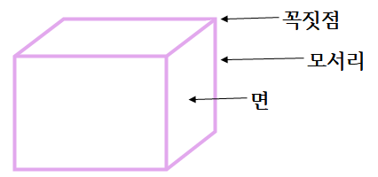

직육면체
다음 그림과 같이 직사각형 모양의 면 6개로 둘러싸인 도형을 직육면체 라고 합니다.
면 : 선분으로 둘러싸인 부분
모서리 : 면과 면이 만나는 선분
꼭짓점 : 모서리와 모서리가 만나는 점
직육면체에서 보이는 면은 3개입니다.
직육면체에서 보이는 모서리는 9개입니다.
직육면체에서 보이는 꼭짓점은 7개입니다.
직육면체의 특징
모양과 크기가 같은 면이 2개씩 3쌍 있습니다.길이가 같은 모서리가 4개씩 3쌍 있습니다.
직육면체의 겨냥도
직육면체의 겨냥도 : 직육면체의 모양을 잘 알 수 있도록 하기 위하여 보이는 모서리는 실선으로, 보이지 않는 모서리는 점선으로 그린 그림겨냥도 그리기
① 평행한 모서리는 평행하도록 그립니다.
② 보이는 모서리는 실선으로, 보이지 않는 모서리는 점선으로 그립니다.
정육면체
정육면체 : 정사각형 모양의 면 6개로 둘러싸인 도형| 면의 모양 | 모서리의 길이 |
|---|---|
| 정사격형 | 모두 같습니다. |
직육면체와 정육면체의 같은 점
| 면의 수 | 모서리의 수 | 꼭짓점의 수 | |
|---|---|---|---|
| 정사격형 | 6 | 12 | 8 |
| 정육면체 | 6 | 12 | 8 |
직육면체와 정육면체의 다른 점
| 면의 모양 | 모서리의 길이 | |
|---|---|---|
| 정사격형 | 직사각형 | 길이가 같은 모서리가 4개씩 3쌍 있다 |
| 정육면체 | 정사각형 | 모두 같다 |
직육면체에서 평행한 면, 수직인 면
직육면체에서 서로 마주 보는 면은 평행합니다.평행한 면이 3쌍입니다.
직육면체에서 만나는 면은 서로 수직입니다.
한 면에 수직인 면은 4개입니다.